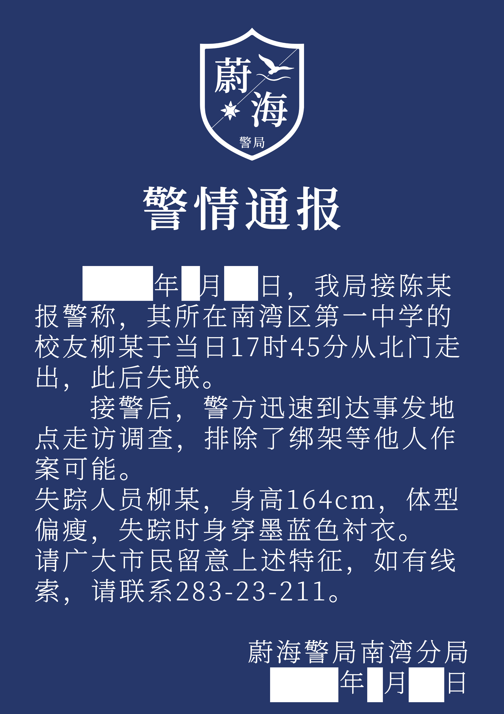

你毫不迟疑地迈上了旅途，一步，两步，你在空无一人的校车上找了个位置坐下。
手机振动起来，一个陌生号码给你发来短信，“多亏了你的提前通知，现在我们来接你了。”
屏幕黑了下去，映出你困惑的脸，此时你才注意到，自己上车许久，车门紧闭，司机却没有要操作的意思。
两侧的窗玻璃幽幽地映出窗外的景色，深蓝色贴膜隔绝了绝大多数光线，车内气氛太过诡异，你猛地站起来试图逃离，但身后车门的开启打断了你的动作。
你终于明白沈伏日记里写的“他们”是什么了，可一切为时已晚。
